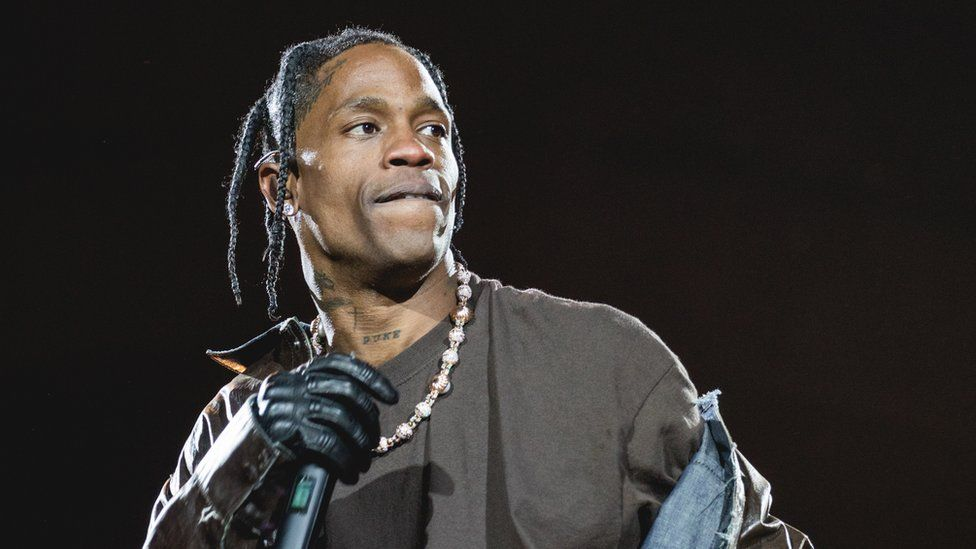

Travis Scott 'devastated' by Texas festival deaths

At least eight people died and scores of people were hurt after a crowd surge on the opening night of the music event in Houston, Texas.
"My prayers go out to the families all those impacted by what happened," the rapper said in a statement on Twitter.
"I'm absolutely devastated by what took place last night," he said.
Emergency workers described how panic broke out after the crowd began to press towards the front of the stage during the rapper's headline set on Friday evening.
As the crush began causing injuries to people, the panic grew and the casualties quickly overwhelmed the on site first aiders, officials said.
Eleven people were taken to hospital with cardiac arrests, with eight of them dying. Some 300 people were treated for injuries such as cuts and bruises on Friday.
In his first statement since the tragedy, the rapper thanked the police and emergency services and said he was "committed to working together with the Houston community to heal and support the families in need".
Some 50,000 people were attending the two-day outdoor event, which has now been cancelled.
According to the Houston Chronicle, Scott stopped multiple times during his performance when he spotted fans in distress near the front of the stage.
The rapper asked security to help them out of the crowd. Emergency vehicles, lights and alarms flashing, cut through the crowds several times, the paper says.
Amateur video from the concert appears to show fans jumping on an emergency vehicle in the crowd as the performance continues on stage.
A reunification centre has been set up at the Wyndham Houston Hotel for families who have not heard from loved ones at the festival.
Astroworld is an annual event held at NRG Park since 2018, though it was put on pause last year because of the Covid-19 pandemic.
Travis Scott, 29, made his big breakthrough in 2013 and has since had eight nominations for Grammy Awards. He has a child with celebrity socialite Kylie Jenner, who also attended the concert.
Other acts scheduled at the festival over the weekend included rappers Chief Keef and 21 Savage, and Australian rock act Tame Impala.
The night wasn't supposed to end like it did. Today, the streets surrounding the Astroworld festival grounds are still mostly closed off, and the venue is almost empty except for staff and a heavy police presence.
Edward, a 25-year-old Houston native and a long-time Travis Scott fan, attended Friday's performances, and both previous Astroworld festivals.
He was right in the middle of the crowd when, he says, things began to get ugly. As the surge grew worse in a matter of minutes, desperate concert-goers tried to escape, pushing and pulling.
"I personally had a girl grab and hold on to me for dear life," he said. "I had to calm her down because she literally thought she was about to die."
Edward says he made a protective circle with his arms around her so she could catch her breath. He was able to pull her out of the crowd and help her to safety. As he walked out, he saw unconscious people around him, some already receiving CPR.
Another attendee, Andy Pacheco, filmed the moment concert-goer Seanna Faith, in a desperate plea for help, climbed on to a platform where a cameraman was stationed to ask him to do something about the crowd surge. She wanted the cameraman to call police or medics. But her plea for help was in vain.
Ms Faith later wrote online that she had just escaped a "sinkhole" of people as the crowding had become more intense.
She managed to pull herself and a friend out and was trying to get help for the others.
People come to these festivals to escape reality and feel like they belong in a music community. On Friday night, that sense of belonging turned deadly.